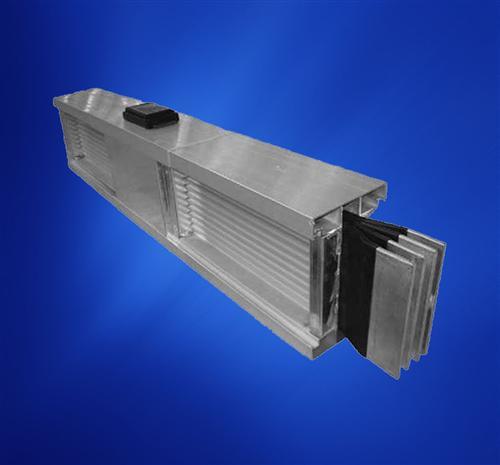

母线槽是什么？常见类型与选型要点
母线槽（英文 busway / bus duct）是一种由铜排或铝排构成、封闭于金属外壳中的大功率配电装置，用于替代电缆，把电能从低压配电柜输送到各用电区域。本文讲清母线槽是什么、常见母线槽类型与母线槽选型要点，帮助电气工程师和采购快速入门。

母线槽是什么？基本定义与工作原理
母线槽由导体（铜排/铝排）、绝缘材料、金属外壳和连接器四部分构成。电流通过低阻抗导体传输，外壳同时承担防护与散热功能。相比电缆，母线槽载流量大、占用空间小、便于引出分路，广泛用于工厂、高层建筑、数据中心等大负荷场景。
母线槽的常见类型
空气型母线槽
导体之间留有空隙，靠空气绝缘。结构简单、成本较低，适合干燥环境和小电流（一般 1250A 以下）配电；缺点是散热效率较低、体积较大。
密集型母线槽
用固体绝缘材料把每根铜排包裹后紧密合成一体，靠传导散热。同等电流下体积更小、载流量更大、防护等级更高，可承载 2500A–6300A 大电流，是当前工业与民用建筑的主流选择。
特种母线槽：耐火、防水防潮、智能与照明
耐火母线槽遇火仍能持续供电，用于消防与应急电源；防水防潮（浇注型）母线槽以树脂全浇筑，适合地下与潮湿环境；智能母线槽集成监测单元，可实时查看温度与负载；照明母线槽专用于商场、厂房照明配电，便于灵活引出回路。
母线槽与电缆相比，优势在哪里
- 载流量大：同等截面积下载流能力更高，大电流场景无需多根并联。
- 节省空间：结构紧凑，可贴近梁板吊装，节省竖井空间。
- 分路灵活：插接式母线槽可随时引出电源分路，改扩建方便。
- 安全可靠：全封闭外壳防护等级高，机械强度好，短路耐受能力强。
母线槽选型要点
- 按电流与负载确定规格等级，并留合理裕量；
- 按环境选择防护等级：干燥环境可用空气型，潮湿粉尘环境建议密集型或防水型；
- 消防与应急回路选择耐火母线槽；
- 关注铜排纯度、外壳材质、连接器工艺与检测报告；
- 大电流、空间受限优先密集型；小电流、成本敏感可选空气型。
常见问题（FAQ）
Q1：母线槽和电缆哪个好？
没有绝对好坏：大电流、竖井空间紧张、需频繁分路时母线槽更优；小电流、短距离场景电缆成本更低。
Q2：母线槽能用多少年？
正常维护下通常可达 20 年以上，关键在连接器工艺与使用环境。
Q3：母线槽需要什么检测？
出厂一般附型式试验报告，涉及温升、短路耐受、绝缘耐压等项目，采购时务必索取。